FIKA_PROFILE.TXT - Notepad
FileEditSearchHelp
Design_Studio - File Explorer
ViewGoFavoritesTools
Lomba Poster
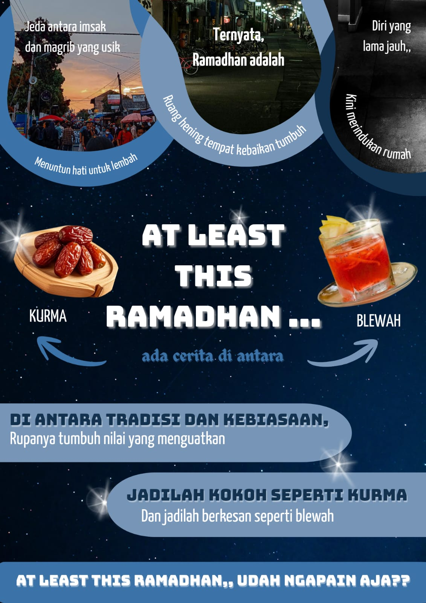
Lomba Ramadhan by HMJTI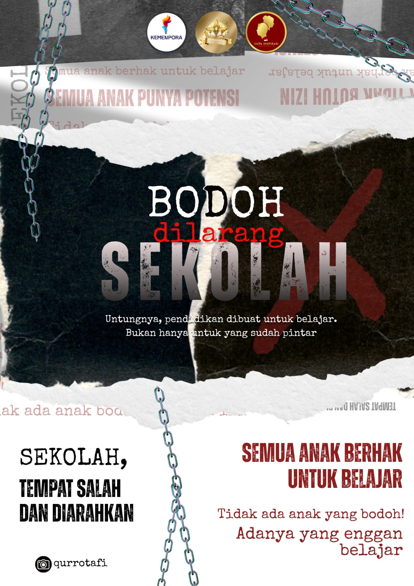
Lomba Duta Inspirative Indonesia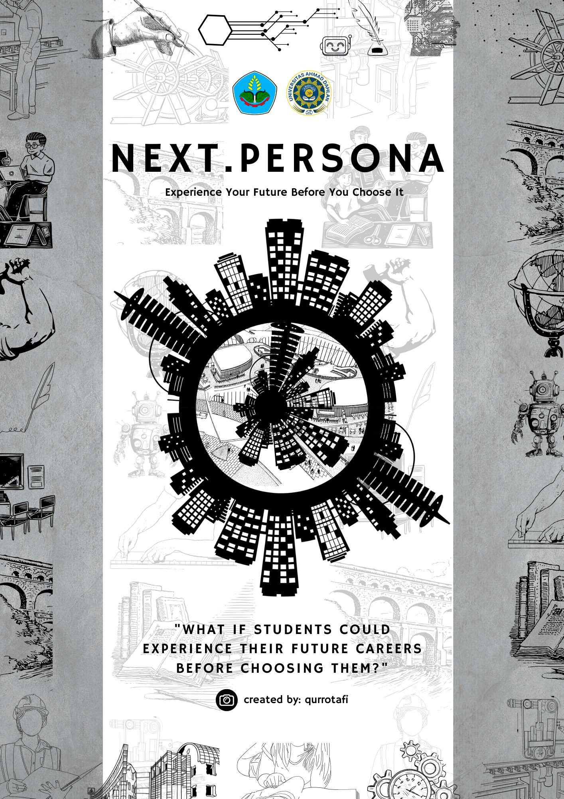
Lomba Nasional di Universitas Ahmad Dahlan, YogyakartaAset Desain & Portofolio Kreatif (Canva/Figma)
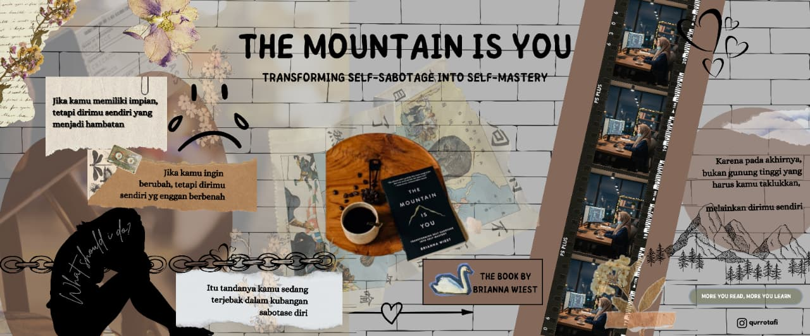
Lomba Resensi Buku 2025 by Perpus Polije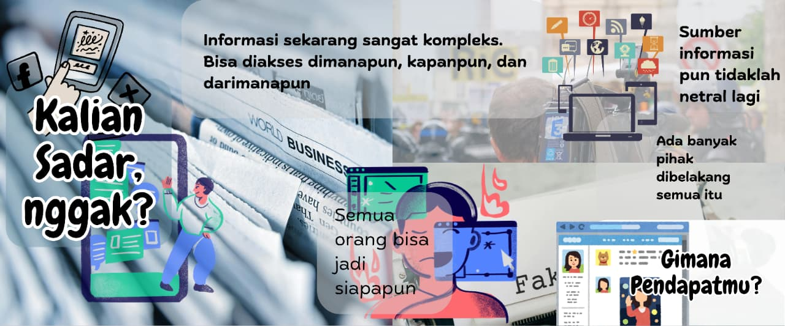
Feed Instagram karsa.nifa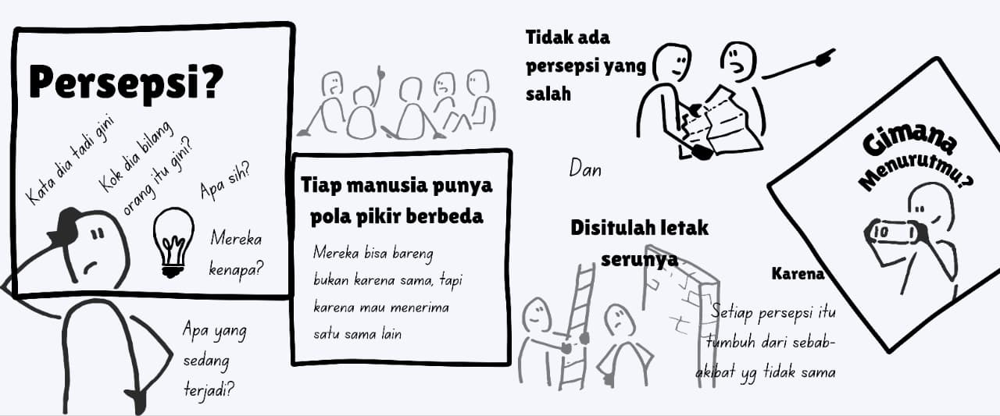
feed rangkuman materi LKMM Pra-TD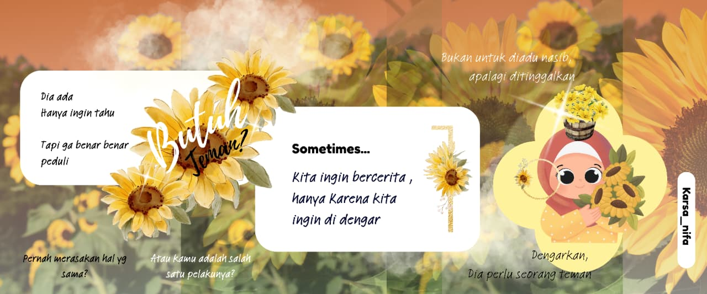
Feed Instagram karsa.nifa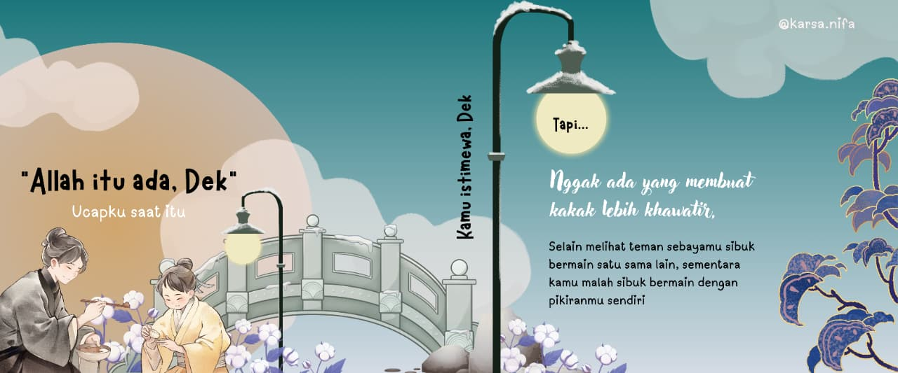
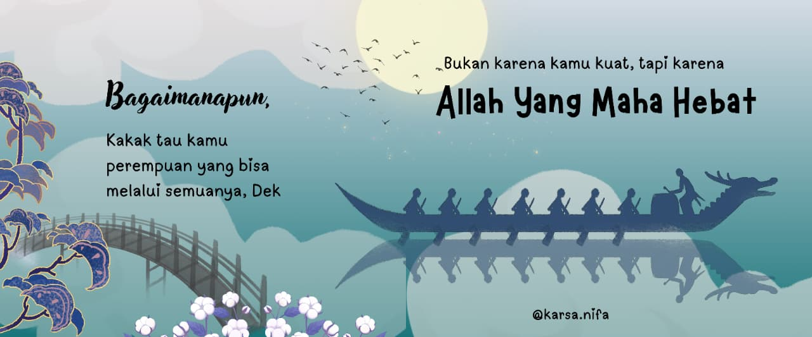
Feed Lomba Essai Inspiratif by SisterlillahWallpaper Desktop
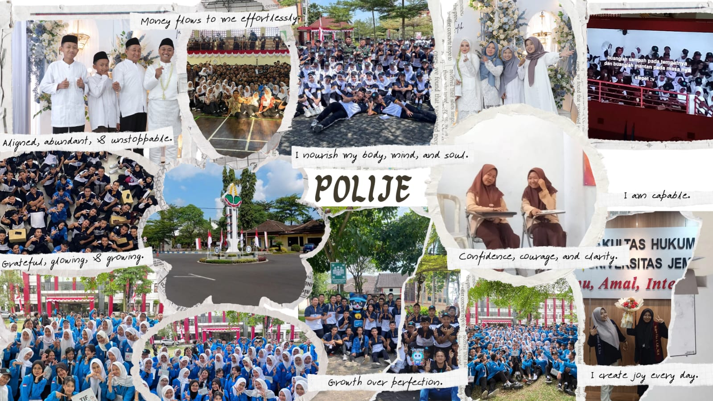
Wallpaper Pas Maba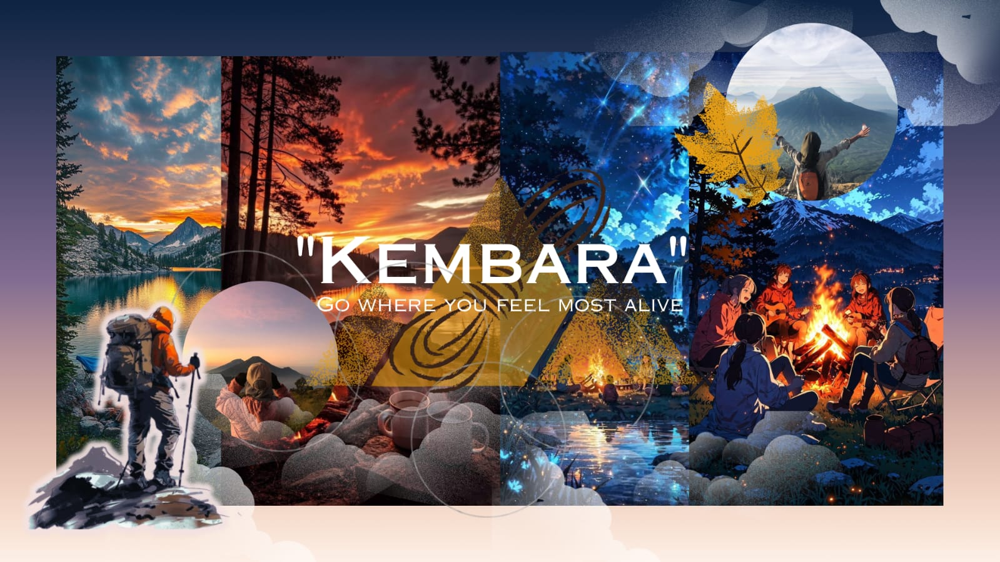
Wallpaper Gabutz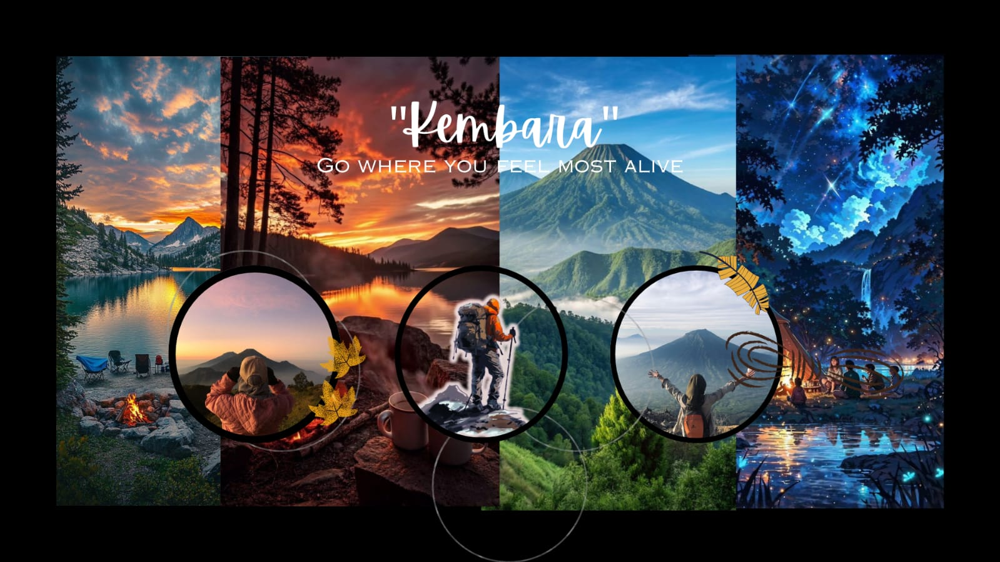
Wallpaper Gabutz 2Wallpaper HP
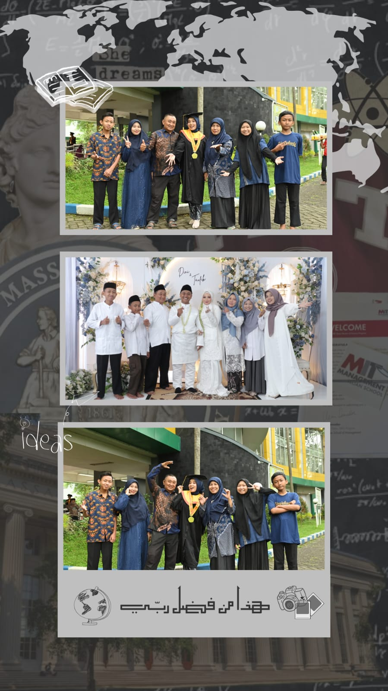
Wallpaper HP Foto Keluarga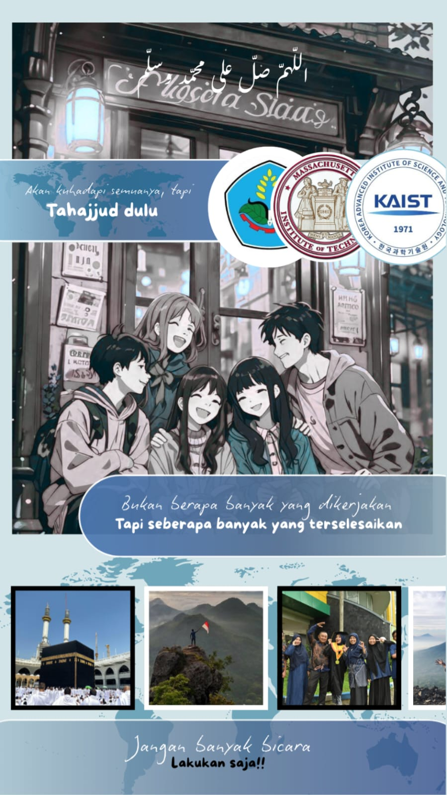
Wallpaper Kampus Impian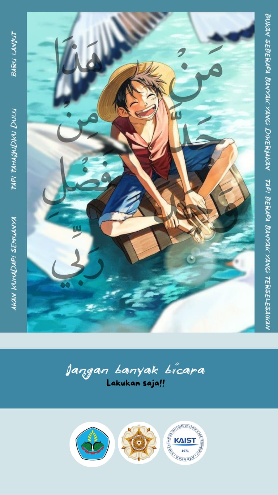
Wallpaper Kampus ImpianPamflet Kegiatan
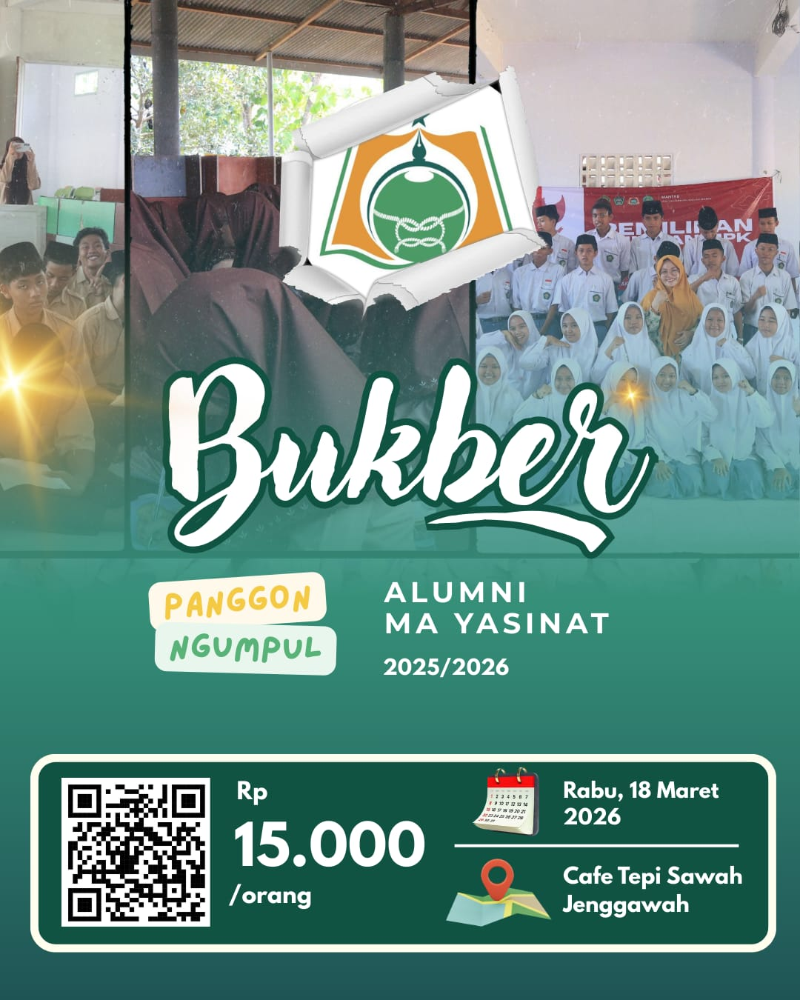
Pamflet Bukber AlumniLife Report
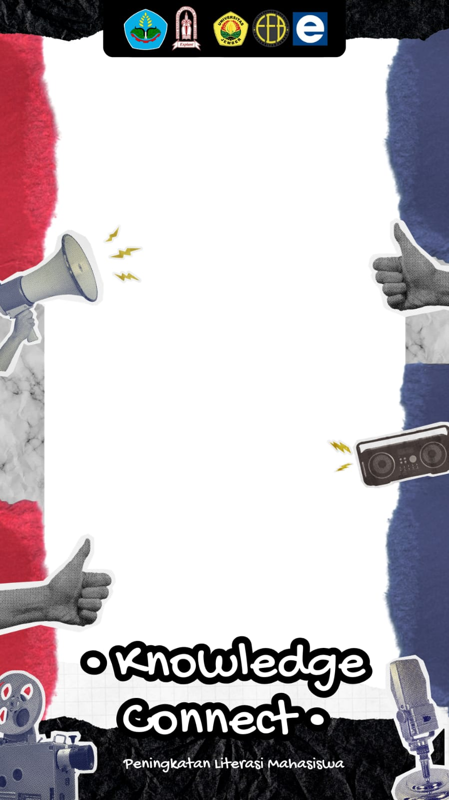
Life Report (di desain bersama tim PDD Kegiatan)